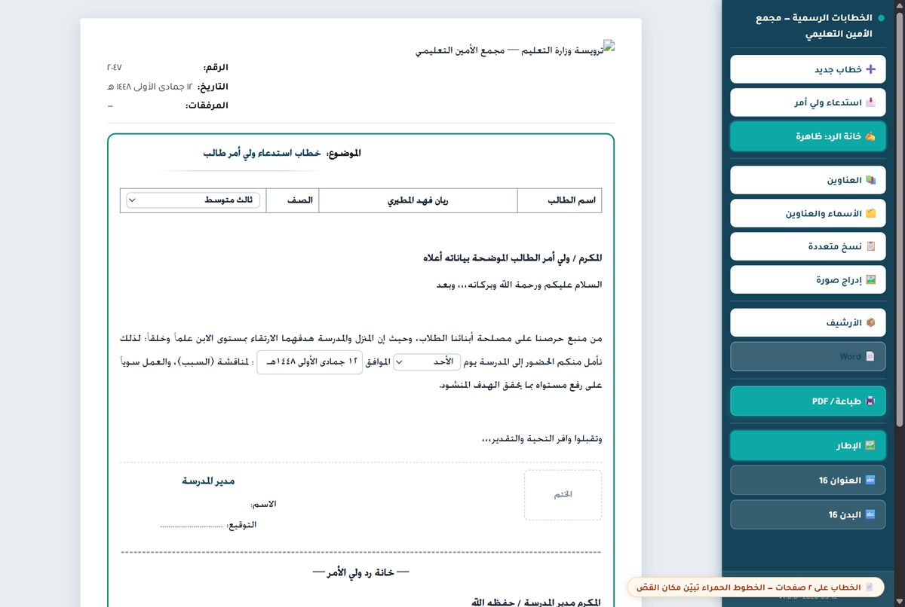

بوابة واحدة تجمع أدوات العمل الإداري اليومي في مدرسة مجمع الأمين: الخطابات، محاضر الاجتماعات، والتقارير — تُستخدم فعلياً في المدرسة.
صياغة الخطابات الرسمية بترويسة المدرسة وطباعتها جاهزة.
محاضر الاجتماعات مع أرشيف اللجان السبع واقتراحات بنود جاهزة.
كتابة التقارير الإدارية بصيغة موحّدة قابلة للطباعة.
أداة لتقسيم ملف PDF كبير إلى ملفات منفصلة.
الخصوصية: الأداة تعمل على أسماء الطلاب وأعضاء اللجان، ولذلك لا يوجد هنا رابط دخول مباشر. الوصول من داخل المدرسة بحسابها، وهذه الصفحة للتعريف فقط — بلا أي بيانات.
